You know a panel discussion has gone well when one of the UK's leading building scientists opens with "I'm going to be controversial" — and then actually is.
On 2 July, the Healthy Buildings Network Showcase brought together representatives from six major research networks and hubs — Doug Booker (HESTIA), Abigail Hathway (AirHub), Marcella Ucci (UKIEG), Akash Biswal (GREENIN), Dejan Mumovic (CHILI Hub), and Rajat Gupta (HEARTH) — expertly steered by Jade Lewis of the APPG for Healthy Homes and Buildings. The questions came from you: registered attendees submitted their most pressing questions ahead of the event, and eight themes emerged, from the translation gap to technology adoption. Here's what happened when we put them to the panel.
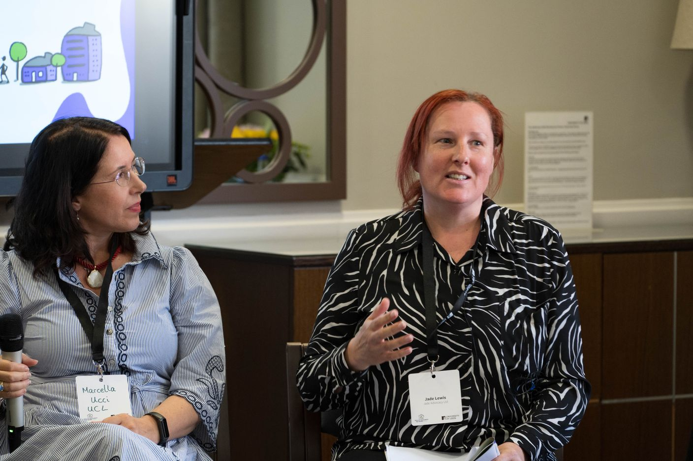
We've been selling healthy buildings in the wrong language
The discussion opened with a deceptively simple observation: say "healthy retrofit" to someone and it resonates; say "energy retrofit" and their eyes glaze over. Everybody cares about their own health and wellbeing. Not everybody cares about carbon. If we want change, the panel agreed, we need to talk about buildings the way people actually experience them — as places that make us feel well, or don't.
But there's a deeper problem. Much of our evidence sits at the population level, and people struggle to connect it to their own front door — until something catastrophic happens. Most of us assume we're better protected by current standards than we really are. As one panellist put it, if the public had a clearer picture of the gap between what's possible and what's actually happening, they'd be demanding action from policymakers already.
And a humbling admission from the architects in the room: health barely features in architectural education. Sustainability and energy efficiency are taught; the idea of designers as "agents of public health" is not.
The provocation: do we even know what a healthy building is?
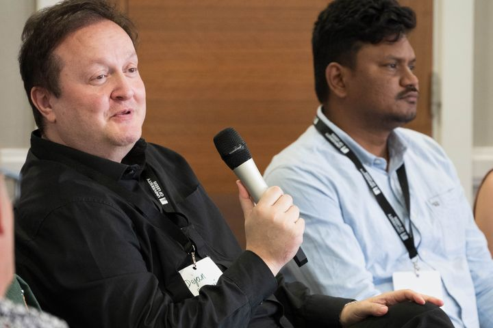
Then came the moment of the afternoon. Dejan Mumovic confessed that he doesn't know what a healthy building means — and that if he did, the CHILI Hub wouldn't need to exist. Try to optimise a building simultaneously for PM2.5, nitrogen dioxide, VOCs, comfort and noise, and you end up somewhere uncomfortable: a fully automated, sensor-driven building that no human occupant controls. Is that where we want to live?
Jade pushed back with the WHO's definition of health — complete physical, mental and social wellbeing — and Marcella Ucci offered perhaps the most useful reframe of the day: we already know good recipes for healthy buildings. Space. Daylight. Passivhaus principles. The genuinely unsolved problem isn't the recipe — it's how we fund it, and how we make sure the poorest in society get a slice of the cake rather than watching others eat it.
"We already know the recipes for healthy buildings — space, daylight, good design. What we lack is the funding, and the fairness, to deliver them to those who need them most."
— Marcella Ucci, UCL / UKIEG
Health versus carbon: a false fight with a very real timescale problem
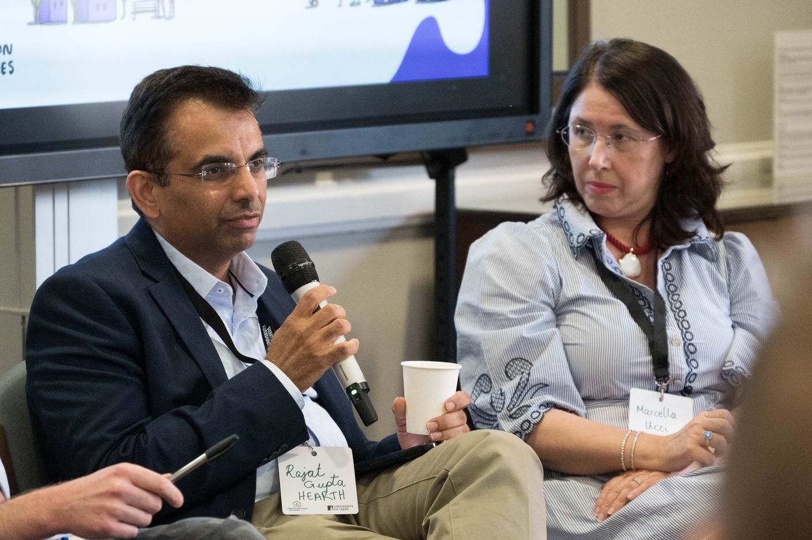
The panel was united on one thing: energy efficiency and health shouldn't be rivals. But the way we retrofit often forces the fight — external wall insulation with no external shading, airtightness with no ventilation. Rajat Gupta shared a sobering finding from HEARTH: developments built within the last two years already need retrofitting. That's a cost in disruption, money and embodied carbon we simply cannot keep paying.
The economics carry a cruel asymmetry, too. The CHILI Hub is calculating what it would cost to retrofit the entire school building stock — alongside what inaction costs the NHS in asthma and respiratory illness. The trouble? Capital costs land today; the health savings arrive 30 or 40 years later; and governments think in four-year cycles.
There was good news, though. Jade pointed to the new government schools retrofit programme, which explicitly recognises health — not just carbon — as an outcome. In her words: on that front, "we won the battle."
And a thread of welcome humility ran through it all. There is no safe threshold for PM2.5 — which means, by definition, all air carries some pollution, and how much we accept is ultimately a political and values-based decision, not a purely technical one. Perhaps, as several panellists suggested, the goal isn't the perfectly optimised building at all, but robust, adaptable environments that can respond as the evidence — and the climate — changes.
Measure what matters (and know why you're measuring)
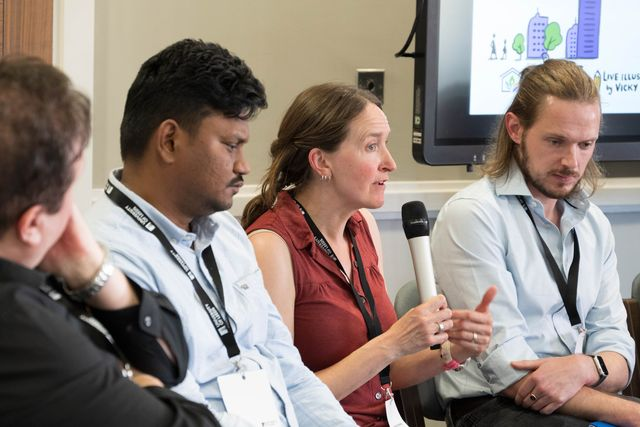
On monitoring, the practical consensus: CO2 as a proxy for ventilation, plus PM2.5 and TVOCs for the bigger picture. But the panel's engineers were refreshingly suspicious of engineering. Complex buildings mean maintenance problems, and a poorly maintained HVAC system becomes a source of pollution rather than a solution. The best buildings, we heard, are simple buildings.
Two neglected senses got their moment, too. Acoustics and lighting rarely make the healthy buildings headlines, yet noise is one of the biggest complaints in social housing — and in post-occupancy studies of more than 500 buildings, occupants consistently ranked noise above air quality, because you can't see the air, but you can certainly hear your neighbours. (A related finding from those same studies: not a single building management system was working as intended.)
And a note of caution: measurement needs a purpose. Handing people data they don't understand can frighten rather than empower. Ask people how they feel alongside what the sensors say.
One wish each
To close, Jade asked each panellist for the one thing that would deliver healthy homes and buildings. The answers were varied — and surprisingly concrete.
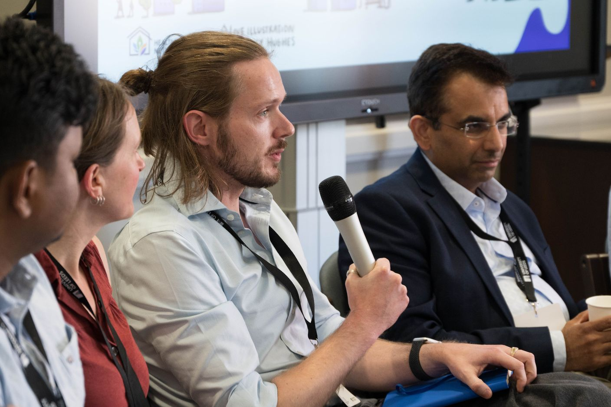
Doug Booker — HESTIA / University of Leeds
Think beyond health to flourishing — buildings that help people live the lives they want, not just avoid illness.
Rajat Gupta — HEARTH Hub / Oxford Brookes University
Treat the coming wave of retrofit at scale as a once-in-a-generation opportunity to build in climate resilience and indoor air quality, not just energy savings.
Marcella Ucci — UKIEG / UCL
A czar for healthy homes and buildings — someone with vision, targets and real power to join up an agenda currently scattered across government departments.
Abigail Hathway — AirHub / University of Sheffield
Joined-up datasets across research projects, so our individual studies add up to a bigger understanding of the building stock we actually live in.
Akash Biswal — GREENIN / University of Surrey
Climate- and seasonality-normalised standards — healthy indoor environments that work across the whole year, not just the season we happened to measure.
Dejan Mumovic — CHILI Hub / UCL
Engineering in its beautiful simplicity — remove pollutants at the source, insist on low-VOC materials, and stop designing buildings that seal us off from the world.
From the day
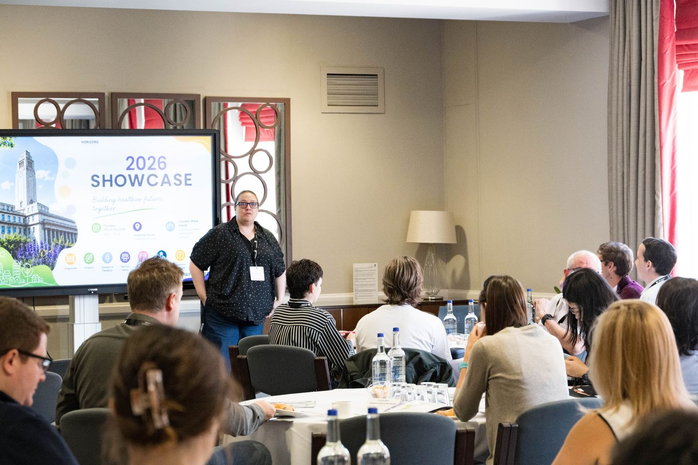
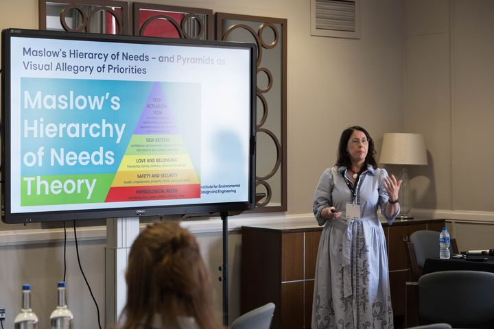
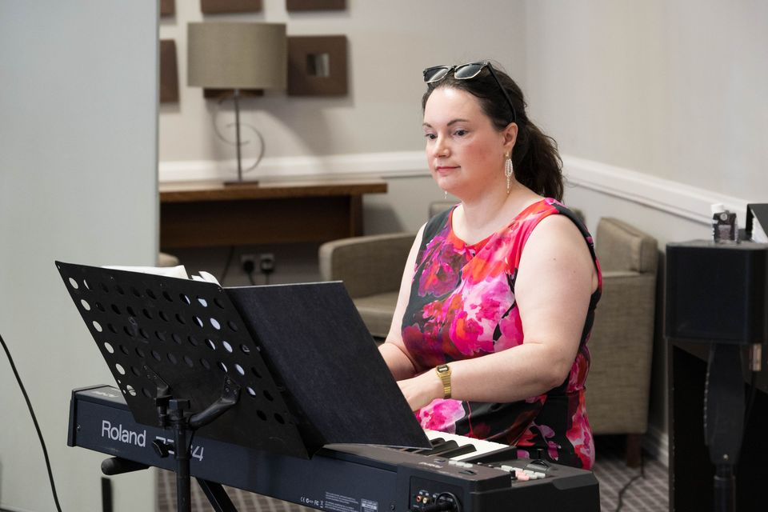
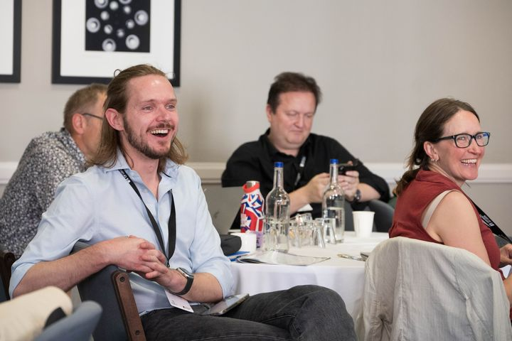
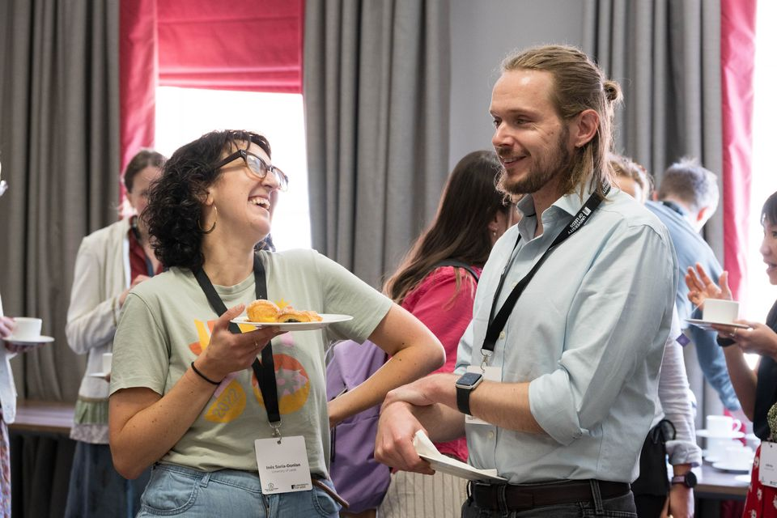
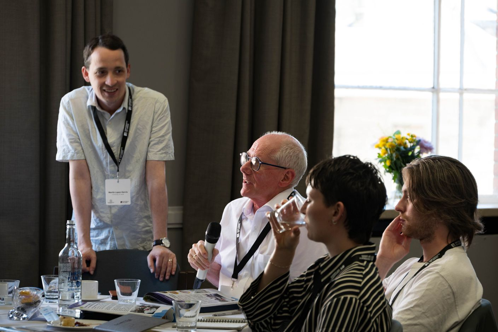
Thank you
To our panel, to Jade for moderating with such energy, and above all to everyone who submitted questions and joined us on the day — if any of the discussion felt radical or provocative, that's entirely your fault, and we're grateful for it.
The Healthy Buildings Network Showcase 2026 took place on 2 July at University House, University of Leeds. If you'd like to get involved with HBN's work, join the network or get in touch.